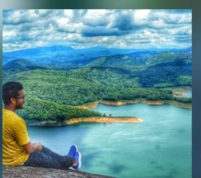
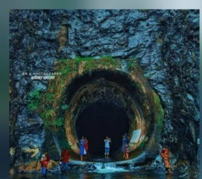
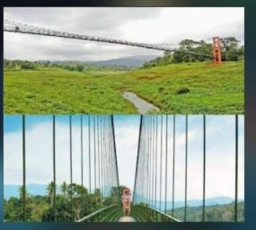
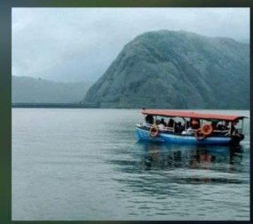
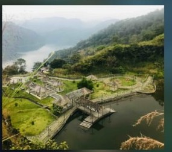

The Ultimate High-Range Experience: Arch Dam, Water Tunnel, Hanging Bridge & Panoramic Heights
Embark on an unforgettable day-long private jeep journey through the heart of Idukki's most dramatic landscapes. Witness Asia's iconic double-curvature Arch Dam, glide across pristine reservoir waters on a safari boat, explore the historic Anchuruli circular water tunnel, walk over the swaying Ayyappankovil suspension bridge, soak in 360° reservoir views from Calvary Mount, and enjoy thrilling panoramic activities at Hill View Adventure Park.

The Idukki Dam Full Day Package by Thekkady Trips is the definitive day-trip circuit designed for travelers who want to experience the grandeur, engineering marvels, and breathtaking highlands of central Idukki. Leaving directly from your hotel in Kumily / Thekkady, our comfortable private 4x4 Jeep carries you across scenic mountain passes, spice gardens, tea hills, and tranquil reservoir shores.
Ideal For: Families, couples, photography enthusiasts, and adventure lovers seeking a comprehensive, relaxed full-day exploration with private vehicle flexibility, dedicated local driver-guide, and doorstep pickup.
Every attraction included in your 1-day itinerary with ample time for exploration, boating, and photography.

Spot 1 • ViewpointPerched high on the ridge, enjoy sweeping 360° views of the Idukki reservoir, forested islets, and cool mountain breezes.

Spot 2 • Engineering MarvelA mesmerizing 5.5 km circular underground water tunnel funneling water from Erattayar into the Idukki lake with roaring cascades.

Spot 3 • Suspension BridgeOne of the longest suspension bridges in Kerala, swinging gently over the scenic Periyar river backwaters and rustic farmlands.
Spot 4 • Asia's Largest Arch Dam
Walk across the summit of Asia’s largest double-curvature arch dam, standing 554 ft tall between the Kuravan and Kurathi hills.

Spot 5 • Reservoir BoatingCruise peacefully through the emerald waters of the massive reservoir, surrounded by evergreen jungle ridges and mountain peaks.

Spot 6 • Adventure & SunsetOverlooking both Idukki and Cheruthoni dams, featuring zipline, pedalo boating lake, watch tower, children's play park & sunset views.
Your dedicated driver cum tour guide arrives at your resort, homestay, or hotel in Kumily / Thekkady in a sanitized, comfortable private Jeep. Departure towards the high-range scenic highway.
Cross the historic suspension bridge hanging over the Periyar backwaters. Marvel at the submerged historic temple remnants (visible depending on water levels) and enjoy serene morning waterside photography.
Reach the dramatic Anchuruli circular tunnel basin. Observe the roaring current of water flowing out through the hill into the lake. Walk along the rocky banks and admire the lush green amphitheater formed by surrounding mountains.
Ascend to Calvary Mount, the most famous viewpoint in the Idukki district. Behold the mind-blowing aerial panorama of the Idukki reservoir with tiny green islands scattered across the blue waters. Enjoy a delicious Kerala lunch break at a nearby viewpoint restaurant.
Visit the monumental Idukki Arch Dam—constructed without floodgates between the towering Kuravan and Kurathi granite rocks. Walk along the crest of the dam, witness the sheer height, and explore Cheruthoni Dam nearby (battery car buggy available for seniors).
Board the safari boat for a refreshing water safari through the vast reservoir lake. Feel the mountain mist, catch sight of waterbirds, and capture stunning angles of the arch dam structure from water level.
Head up to Hill View Park, situated 350 ft above the water level. Enjoy the landscaped botanical gardens, natural pond with pedalo boats, children's play park, zipline adventure, and the golden hour sunset viewing deck looking over both dams.
Relax on the pleasant evening drive back through the scenic cardamom hills. Safely dropped right back at your hotel or resort in Thekkady / Kumily with wonderful lifelong memories.
Private vehicle hire reserved solely for you and your family—zero sharing with strangers, total privacy.
Carefully timed sequence covering Calvary Mount, Anchuruli, Ayyappankovil, Dam Top, Boating & Hill View Park without rushing.
Plentiful opportunities for panoramic photography, drone shots (where permitted), and relaxed strolls.
Native experienced driver who knows hidden viewpoints, best local eateries, and the rich history of the Idukki project.
We are Kumily's trusted local safari agency with registered vehicles and licensed local drivers. We ensure your day trip to Idukki Dam is seamless, stress-free, and full of wonderful memories:
Instant Confirmation on WhatsApp